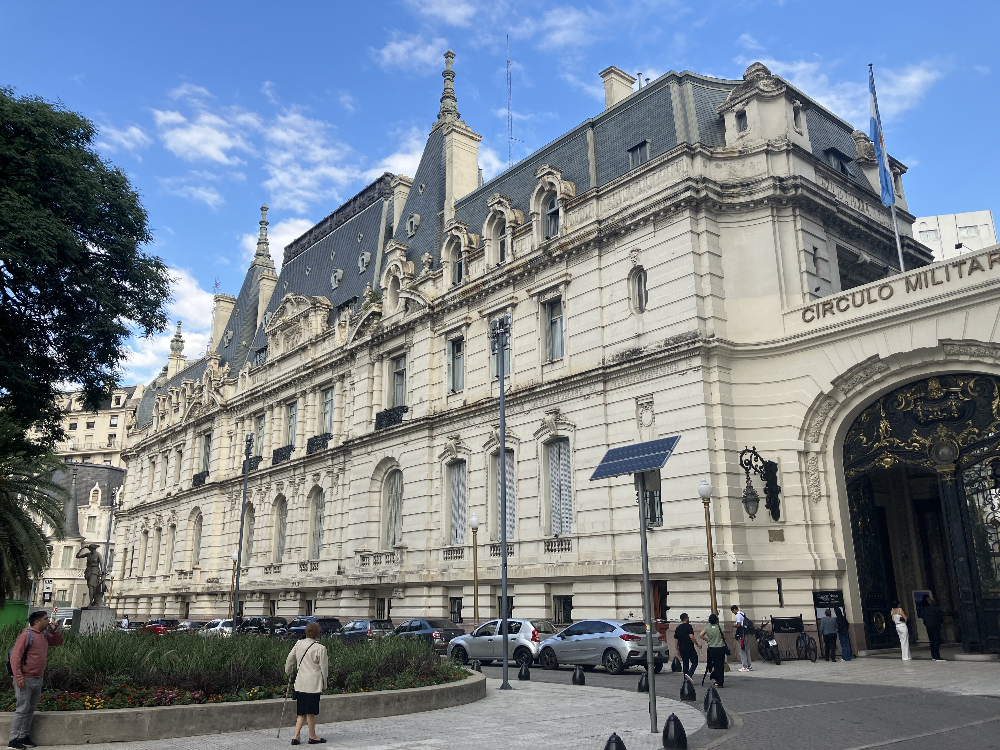
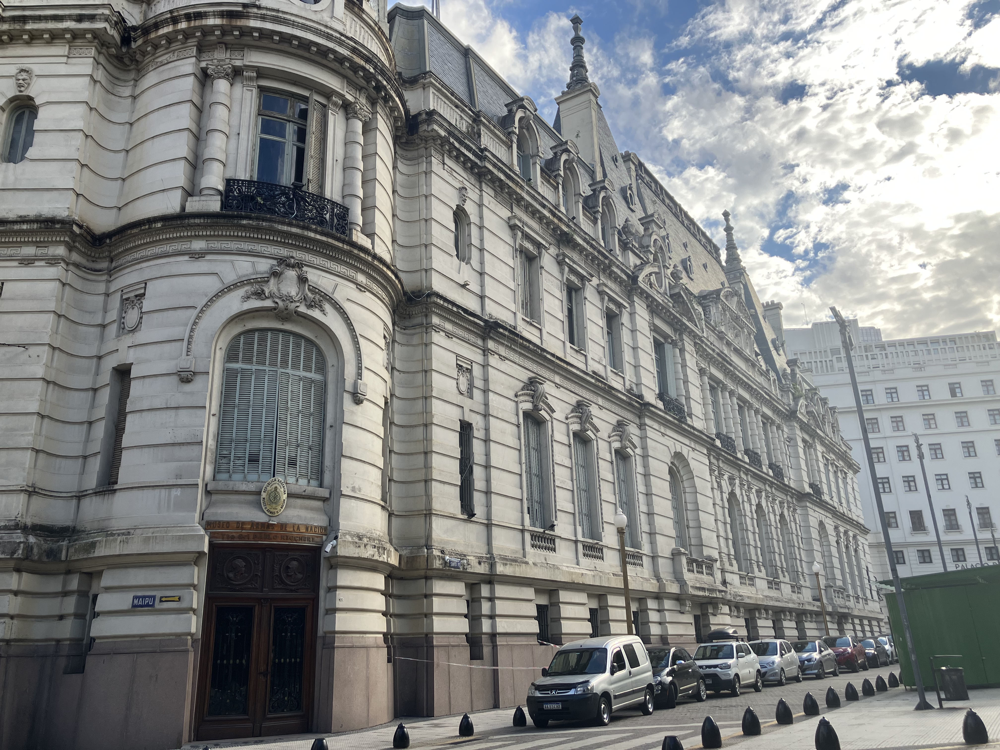
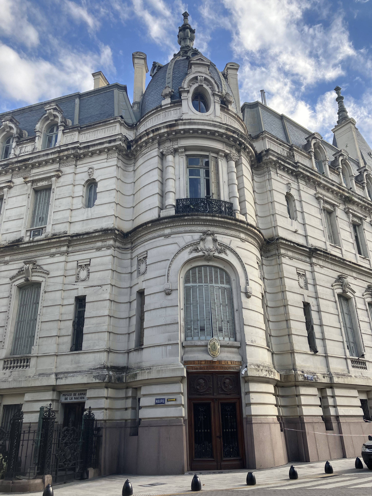
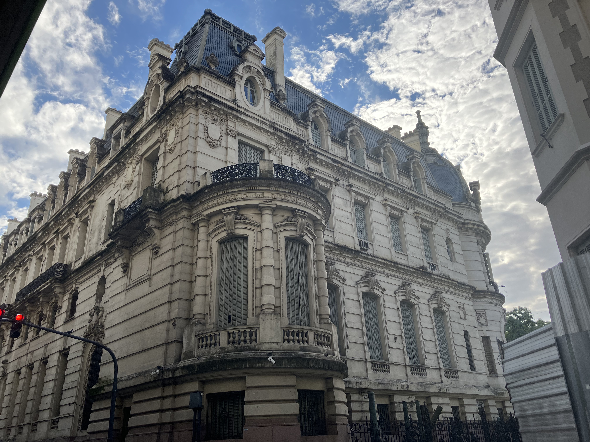
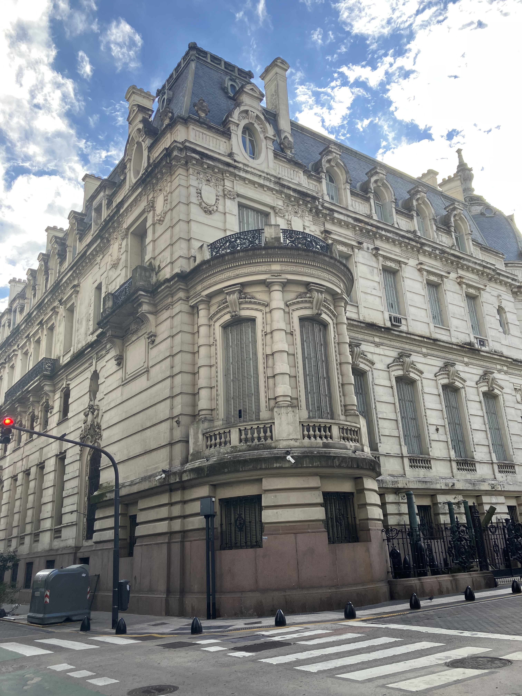
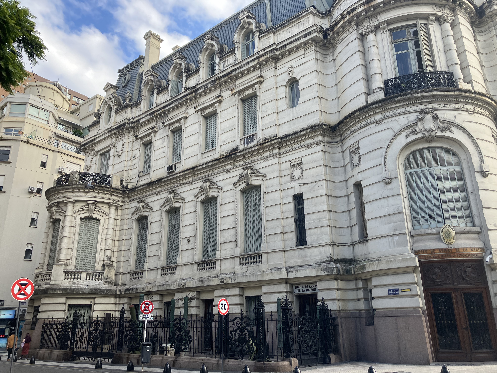
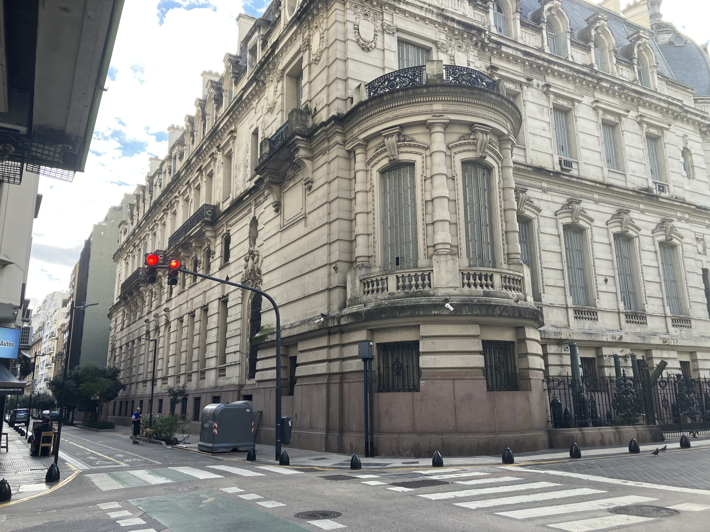
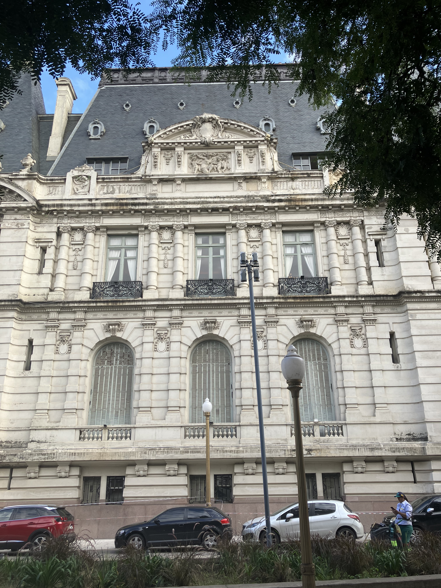

Palacio Paz

Architect: Louis-Marie Henri Sortais
Location: Av. Santa Fe 750, Buenos Aires
Completed: 1914
Style: Beaux-Arts / French Academic Classicism
History
The Palacio Paz was commissioned by José C. Paz, founder of La Prensa, as a private residence that would rival the grand palaces of Europe. Completed in 1914, it became one of the most opulent homes in Buenos Aires, though its owner never lived to see its completion. Over time, it transitioned from a private mansion to the headquarters of the Military Circle, preserving its historical significance.
Architecture
Inspired by French palatial design, the building showcases symmetry, monumental proportions, and elaborate ornamentation. Its richly decorated interiors include grand staircases, reception halls, and finely detailed ceilings, all crafted with European materials and artisanship. The façade reflects elegance and authority, embodying the refined tastes of Argentina’s early 20th-century elite.
Legacy
Today, the Palacio Paz stands as a testament to Argentina’s aristocratic past and cultural aspirations during a period of great prosperity. It remains one of the finest examples of Beaux-Arts architecture in the country, preserving a legacy of luxury, heritage, and historical identity.
Gallery






